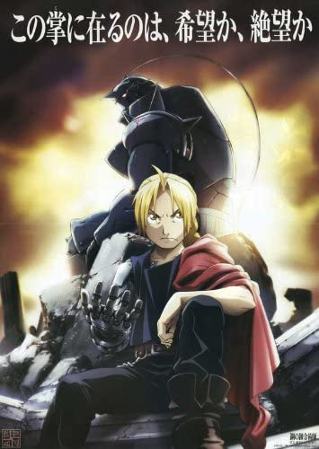

Soul Eater
A történet a Halálisten Fegyvermester Akadémián játszódik, a cselekmény három, egy fegyvermesterből és legalább egy emberi fegyverből álló csapat köré összpontosul. A csapatok célja, hogy a fegyvert „halálkaszává” fejlesszék fel, s így az Akadémia fejének, Halálisten mesternek fegyverévé változtassák
Inuyasha
Az 1500-as évekbeli Tokióban épp háború dúl. Ilyenkor még léteztek óriási démonok és gonosz szellemek. Ők is a Négy Lélek Gyöngyét akarják megszerezni, csakúgy mint InuYasha. InuYasha egy kutyadémon, akit Kykio papnő a nyilával egy fához szögezett

Fullmetal Alchemist Brotherhood
A történet két központi karaktere Edward és Alphonse Elric. A tehetséges tudós testvérpár megpróbálja felkutatni, ill. létrehozni a Bölcsek kövét. Nem önös cél vezérli őket, hanem halott édesanyjukat szeretnék visszahozni az élők sorába. A kísérlet azonban komoly sérülést okoz mindkettejük testi épségében…
Bleach
Kurosaki Ichigo nem éppen átlagos gimnazista. Feltűnő hajszín, lökött család – és ha ez nem volna elég, a képesség, hogy lássa az evilágon rekedt lelkeket. Egyébként sem egyhangú élete gyökeresen felfordul, amikor megtudja, hogy léteznek gonosz lelkek – Lidércek -, és halálistenek, akik az embereket védik tőlük

My Hero Academia
“Az emberek nem születnek egyenlőnek!” Ezt Midoriya Izuku már 4 éves korában megtapasztalhatta, mikor a kortársai azért zaklatták, mert a fiúnak semmiféle különleges képessége nincs, holott ebben a világban szinte mindenki rendelkezik valamilyen szupererővel. Ennek ellenére a fiú arról álmodozik, hogy egy nap ő is olyan nagy hős lehet, mint az általa bálványozott All-Might. Ezért beiratkozik az ország legjobb hősképző tanintézményébe, a Yueiko Hős Akadémiára, a hőssé válás azonban így sem lesz egyszerű egy átlagos ember számára.
Pokemon
Satoshi (talán Ashként elterjedtebb) Masara városban él, és alig várja tizedik születésnapját. Ebben az időpontban ugyanis a Pokemonvilág tízévesei Pokemonedzővé válhatnak, és elindulhatnak vándorolni a Pokemonmesterré válás útján. A jelentkezők három Pokemon közül választhatnak: Zenigame, Fushigidane, Hitokage. Satoshi éjjel fennmaradva tanulmányozza Orchid Professzornak, a város Pokemonkutatójának videofelvételét a Pokemonedzővé válás első napjáról. Alvás közben pedig álmában teszteli a választható Pokemonok erejét.